Process
.png)
Butterfly
Clear acrylic, solid white

Cloud
Holographic laser film
.png)
Flower
Matte acrylic, pink and beige
01
Reference
Die-line as ground truth
Started with a technical CAD drawing: 45×45mm rounded square base, four shapes per tray, exact dimensions labeled. Paired with a finished holographic sticker photo as material reference. Without both, the model defaults to generic shapes.
02
Cloud
Texture before shape
Three rounds to get the holographic texture right. First pass was too purple-heavy. Added a real texture swatch as image reference, shifted language to "silvery white base, light blue and light pink refraction." Color correction through reference, not prompts alone.
03
Flower
Fighting the 3D badge default
Four rounds. The model kept generating raised 3D buttons instead of flat stickers. Text descriptions alone did not fix it. A real product photo as material reference finally resolved the thickness issue. Color layout also required explicit diagonal correction: "top-left and bottom-right pink, top-right and bottom-left beige-grey."
04
Butterfly
Naming the silhouette
Two rounds. The model simplified "butterfly" into a cloud on the first attempt. Fixed by describing the silhouette explicitly: "symmetrical four-wing, upper wings larger, narrowing at center." Die-line alone was not enough.
Key learnings
Pair every die-line with a finished product photo reference. Shape accuracy improves significantly with both.
For complex silhouettes, describe the outline in words alongside the reference image. Models simplify when uncertain.
Real product photos fix material issues that text prompts cannot. Especially for flat vs. raised texture.
Pantone codes are ignored by image models. Describe in plain language and note the code for documentation only.
Color placement errors need explicit before/after language: "currently X, should be Y."